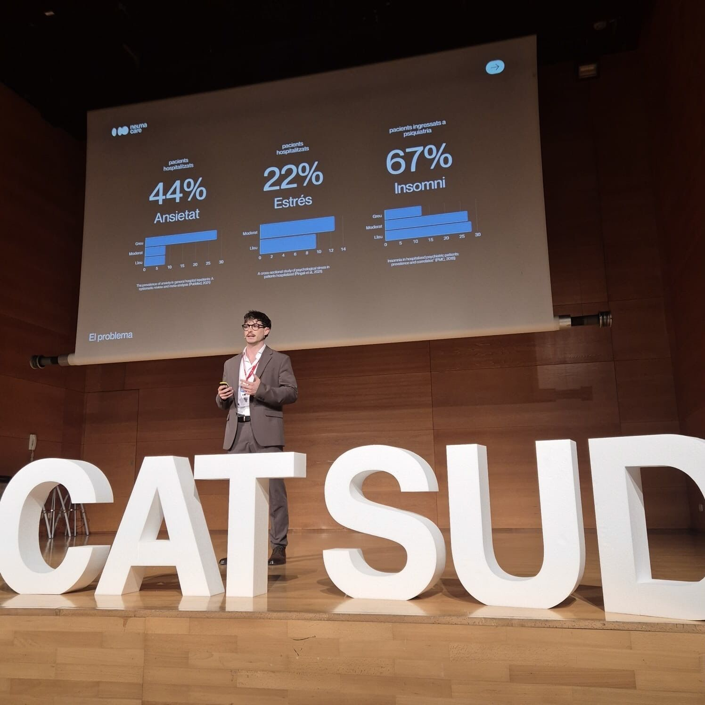
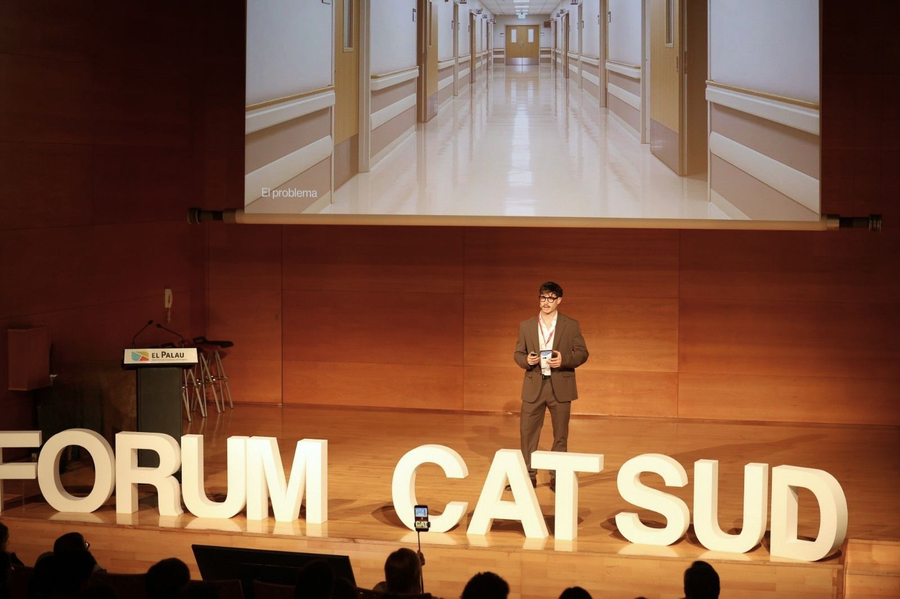
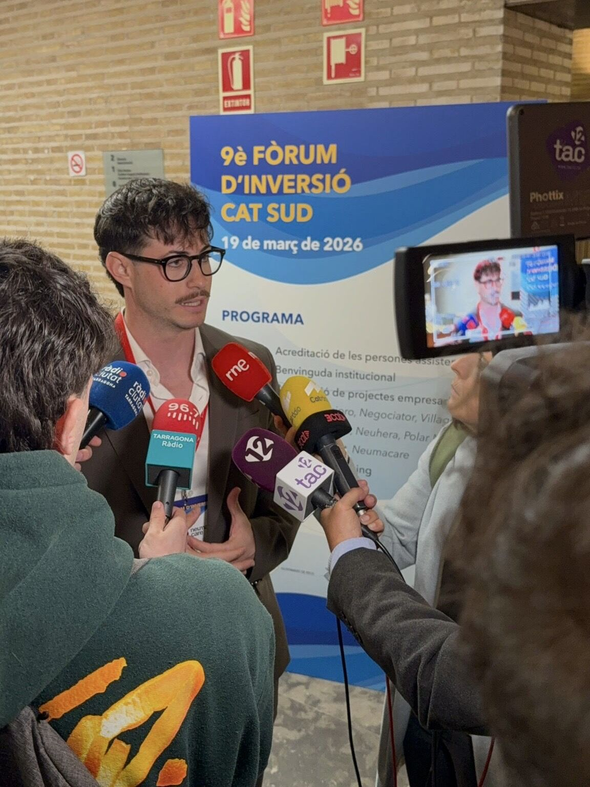

NeumaCare has been selected as one of the 10 most promising projects to pitch at the 9th edition of the Fòrum d'Inversió CAT SUD, held at the Palau de Fires i Congressos de Tarragona. The forum brought together over 200 attendees — investors, entrepreneurs, institutions, and ecosystem stakeholders — for a day focused on innovation, impact, and the future of Southern Catalonia's entrepreneurial landscape.
Each selected startup took the stage for a 7-minute pitch in front of an audience of investors and industry leaders, presenting their value proposition, traction, and growth roadmap. Being chosen among the top ten from a highly competitive pool is a strong signal of confidence in NeumaCare's clinical AI platform and its potential to transform hospital environments at scale.


The First POC Exhibition
Alongside the pitch sessions, this edition featured for the first time a POC (Proof of Concept) exhibition area, where participating startups demonstrated their technology live to attendees. For NeumaCare, this was an opportunity to bring our sensory AI platform out of the hospital room and into direct conversation with investors and partners — showcasing in real time how ambient light, sound and personalised therapies can be adapted to individual patients' physiological states.

About the CAT SUD Investment Forum
The Fòrum d'Inversió CAT SUD is one of the key investment events in Southern Catalonia, now in its ninth edition. The forum is organised through a broad institutional collaboration involving:
- ACCIÓ — the Catalan Government's agency for business competitiveness
- The municipalities of Tarragona and Reus
- The Diputació de Tarragona
- The Universitat Rovira i Virgili (URV)
The forum positions itself as a meeting point between innovative startups from the southern territories and investors seeking high-impact opportunities, with a particular focus on sectors such as health technology, sustainability, and digital transformation.
Sharing the stage with outstanding co-startups
NeumaCare shared the stage with nine other outstanding projects selected this year — a diverse cohort spanning health, agri-tech, sustainability and deep tech. Being part of this group reinforces NeumaCare's position within a growing ecosystem of purpose-driven startups building the future from Southern Catalonia.
"Participating in the CAT SUD Investment Forum has been an opportunity to connect with people who truly believe in what we are building. The interest we received — both during the pitch and at the POC exhibition — confirms that the market is ready for a more human approach to hospital environments."
— David Sevilla, CEO of NeumaCare
A team effort
NeumaCare's participation in this forum was made possible by the dedication of the entire team. Special recognition goes to Ferran Amat, Josep Mª Pujades, Gemma Mitjana, Clara García, Francesc Sevilla and Carla Fernández — whose work in preparation, presentation and follow-up made this milestone possible.
We are grateful to the organisers of the CAT SUD Investment Forum, to every investor and institution that gave us their attention, and to the broader Southern Catalan ecosystem for continuing to bet on innovation with real impact.